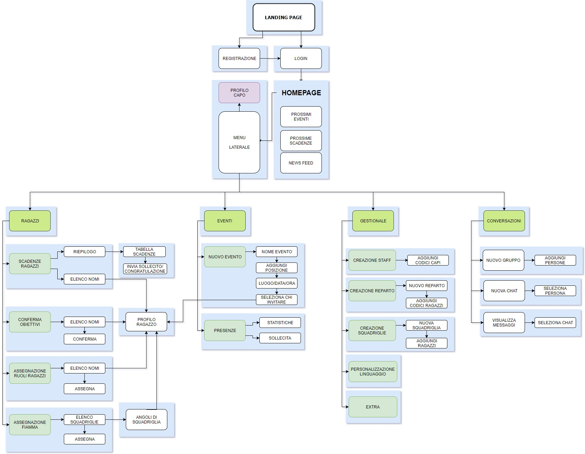

Nome del progetto e repository github
Nome del progetto: Scrapbook
Repository del sito di presentazione progetto: https://github.com/SoNet-2017/Scout
Repository del prototipo (codice): https://github.com/SoNet-2017/Scout-code
Membri del team
| 244167 | Capanna | Cristiano | cristiano.antonio.capanna@gmail.com | CristianoCap |
| 241868 | Montrucchio | Simone | simo.montrucchio@gmail.com | simonemontrucchio |
| 242238 | Seca | Giacomo | giac.seca@gmail.com | oGiacomo |
Presentazione del concept
Vision
Il nostro progetto ha come tema principale il mondo scout. Si rivolge in particolare ai ragazzi con lo scopo di permettere loro di raggiungere i propri obiettivi in maniera più facile, divertente e condivisa, ma anche ai loro Capi in modo da rendere meno impegnativo il loro compito. Non è presente un vero e proprio competitor (solo “Scoutbook”, un social che si basa sul sistema scout americano e quindi non potrebbe essere usato dai ragazzi di altre nazioni), niente che consenta ai ragazzi di avere una loro pagina principale, con i traguardi raggiunti, gli obiettivi futuri, i loro gruppi, i loro prossimi impegni ed ai Capi di poter gestire comodamente le attività, organizzare eventi e proseguire nel loro compito educativo.
Target
Il social network si rivolge nello specifico agli scout del Reparto, ovvero i ragazzi dalla prima media alla prima superiore. I loro capi sono invece tutti maggiorenni, dai 21 anni in su.
Personas
Federica:Luca:
Federico:
Sara:
Scenarios
Dopo: I capi pubblicano in una pagina condivisa tra tutti le attività da fare, i ragazzi le possono così scegliere e discuterne con i capi obiettivi e scadenze. Una volta concordati, i ragazzi riceveranno notifiche in prossimità di queste scadenze, mentre i capi potranno vedere le varie scadenze in delle griglie riassuntive, acilitando i compiti ad entrambi le parti, avendo obiettivi e step successivi aggiornati e condivisi. Sia i capi che i ragazzi potranno inoltre aver accesso alla carta di specialità dettagliata, anch’essa in evoluzione.
Funzionalità e architettura
Funzionalità complete del social network
| Funzionalità complete CAPI | Descrizione |
|---|---|
| Creazione reparto | Creazione del gruppo e degli account dei ragazzi, squadriglie e ruoli |
| Conferma raggiungimento obiettivi | Impostare tappe, confermare mete, impegni e assegnare la fiamma |
| Monitoraggio progressi | Progressi personali dei ragazzi e delle squadriglie visualizzando le scadenze |
| Eventi | Creare eventi (riunioni, uscite ecc) e invitare i ragazzi |
| Personalizzazione nomi funzionalità | Possibilità di personalizzare i nomi delle funzionalità seguendo le tradizioni |
| Funzioni extra che possono abilitare |
Carta di specialità Carta di competenza Incarichi di sq Cassone Mete e Impegni (e a chi mostrarli, per età, per tappa, o manualmente) Impresa di Sq Impresa di Reparto |
| Funzionalità complete RAGAZZI | Descrizione |
|---|---|
| Profilo | Ogni scout ha un profilo che può personalizzare con foto, info, con stickers ecc come fosse un fazzolettone |
| Mete e impegni | Possono cegliere e appuntarsi mete e impegni |
| Specialità e brevetti | Possono scegliere specialità e brevetti su cui lavorare e appuntarsi le scadenze e impostare le notifiche |
| Post | Pubblicare post nelle bacheche dei gruppi di cui si fa parte |
| Conversazioni | Possibilità gruppi di conversazioni temporanei e fare domande con obbligo di risposta a scadenza |
| Angolo di squadriglia | Personalizzabile scegliendo nome sq, colori, animale, caricare l’audio dell’urlo di sq, foto di squadriglia e tenere un elenco aggiornato del materiale del cassone |
| Funzioni extra che possono abilitare |
Il maestro di specialità o competenza può vedere la relativa carta di specialità o competenza del ragazzo che segue Il capo squadriglia può vedere gli impegni dei suoi squadriglieri Il capo squadriglia può approvare le modifiche alla sezione di sq |
Funzionalità dettagliate da implementare
| Funzionalità dettagliate CAPI | Da implementare |
|---|---|
| Login | |
| - Landing page | Sì |
| - Registrazione (inserimento nome, cognome, codice e foto) | Sì |
| - Verifica account (codice censimento Scout) | No |
| - Accesso | Sì |
| Homepage: | |
| - Menù laterale | Sì |
| - Profilo personale | Sì |
| - Prossimi eventi | No |
| - Prossime scadenza | No |
| - Newsfeed | No |
| Ragazzi: | |
| - Tabella riepilogativa scadenze impegni ragazzi | Sì |
| - Possibilità di sollecitare/congratularsi con i ragazzi | Sì |
| - Conferma raggiungimento obiettivi ragazzi | Sì |
| - Assegnazioni ruoli modificabili ai ragazzi in una pagina riepilogativa | Sì |
| - Assegnazione premio alla squadriglia migliore | Sì |
| Eventi: | |
| - Creazioni eventi di tipologie diverse con le opportune informazioni | No |
| - Possibilità di invitare tutti o parte dei ragazzi | No |
| - Possibilità di vedere partecipazione ed eventualmente sollecitare alla risposta | No |
| Gestionale | |
| - Creazione gruppo Staff (capi dello stesso Reparto) | Sì |
| - Creazione gruppo Reparto (inserimento di tutti i codici ragazzi che ne fanno parte) | Sì |
| - Creazione Squadriglie (associa qualche codice ragazzo alle squadriglie). Le squadriglie possono essere modificate nel corso del tempo | Sì |
| - Personalizzazione linguaggio e terminologia funzionalità | No |
| - Abilitazione extra | No |
| Conversazioni: | |
| - Nuovo gruppo | No |
| - Nuova chat | No |
| - Visualizza messaggi) | No |
| Funzionalità dettagliate RAGAZZI | Da implementare |
|---|---|
| Login: | |
| - Riscatto del proprio profilo attraverso codice | No |
| - Accesso | Sì |
| Homepage: | |
| - Menù laterale | Sì |
| - Profilo personale | Sì |
| - Prossimi eventi | No |
| - Prossime scadenza | No |
| - Newsfeed | No |
| Modifica profilo: | |
| - Informazioni biografiche, hobby ecc | Sì |
| - Cambia foto | Sì |
| - Tabella impegni settimanali | Sì |
| - Cambia sfondo | No |
| - Aggiungi stickers | No |
| Sentiero: | |
| - Impegni e metee (visulizzazione e modifica) | Sì |
| - Specialità (scelta specialità, scelta maestro, scelta azioni e scadenze, carta di specialità) | Sì |
| - Brevetti (scelta brevetto, scelta maestro, scelta specialità collegate, carta di competenza) | Sì |
| Conversazioni: | |
| - Nuovo gruppo | No |
| - Nuova chat | No |
| - Visualizza messaggi) | No |
| Angolo di Squadriglia: | |
| - Modifica dell’aspetto della sezione della propria Squadriglia; | No |
| - Cassone |
Architettura dell'informazione
Sitemap dell'utente CAPO
Sitemap dell'utente RAGAZZO
Flow chart ideale della funzionalità principale

Video
Presentazione
Valutazione con gli utenti
Profilo degli utenti
Alla valutazione del prototiopo hanno partecipato in aula il 29 maggio (nel tempo messo a disposizione), 3 studenti del corso di Laurea Magistrarle in Ingegneria del Cinema e dei Mezzi di Comunicazione del Politecnico di Torino, di età 23 anni, di cui due ragazze e un ragazzo.
Strumenti della valutazione
La valutazione si è concentrata sul test della funzionalità principale (nel nostro caso la conquista di una specialità, task anche piuttosto complesso e lungo), utilizzando il mockup fatto su Balsamiq e lasciando libertà all'utente di navigare (eccetto alcune indicazioni sul funzionamento delle attività e della terminologia scout) e chiedendo di commentare ad alta voce i propri pensieri e sensazione nell'utilizzo del prototipo.
Risultato della valutazione
La valutazione ha dato buoni risultati, in quanto tutti gli utenti ci hanno detto che, nonostante non conoscessero assolutamente il mondo scout, gli è bastata una piccola spiegazione per portare a termine il task richiesto avendo a che fare con un'interfaccia molto semplice e pulita, che rendeva molto chiaro quello che avrebbero dovuto fare. Ci è stata fatta una solita critica: quando un ragazzo invita un altro ragazzo ad essere il suo maestro di specialità (una sorta di tutor), il social era impostatato in modo che il tutor potesse solo accettare (nell'ottica dell'aiutarsi sempre). Abbiamo poi valutato, e quindi modificato il mockup, in modo che il tutor potesse anche declinare l'invito e non essere costretto ad accettare, chiedendo però di fornire una motivazione (non sentirsi all'altezza, avere già troppi impegni, ecc) in modo da scusarsi col ragazzo ma senza creare inimicizie.
Analisi critica e lavoro futuro
Nel caso in cui ci fosse la possibilità di poter lavorare ulteriormente all'applicazione in un'ipotetica senconda versione, ci sarebbero due cose principali su cui lavorare:
- Imprese: si tratta di attività fatte in gruppo e non da soli o a coppie, realizzate quindi o da tutta la Squadriglia (circa 6-7 persone) o da tutto il Reparto (circa 30 persone) e che nella realtà sono di difficile organizzazione e gestione a livello logistico e di coordinamento.
- Eventi: in particolare quelli al di fuori del gruppo di appartenenza, per allargare ulteriormente la rete sociale.